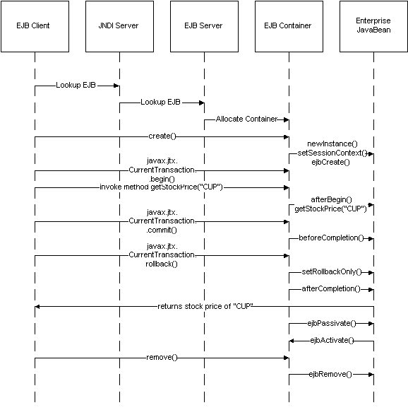

EJB
Servers
Gopalan Suresh Raj
An EJB application server is required when using EJBs. It's part of the architecture; it contains the EJB container. Generally speaking, the primary goals of an application server are to improve performance and simplify development. An application server combines the capabilities of a TP monitor with distributed object technology.
The most important feature in a TP monitor, and likewise in an application server, is efficient resource management. Application servers pool and recycle expensive system resources such as network connections, processes, threads, memory, and database connections. As a developer, you don't really want to write your own thread management and synchronization services within your application code. You don't want to write code within your application to pre-create database connections, cache them in a pool and then allocate them to other applications as needed. You want the application server to do that for you. Application servers provide automatic thread management and database connection management.
EJB increases the simplicity level even more than a plain application server. EJB automates complicated middleware services such as transactions, security, state management, and persistence.
Distributed objects need to know where to find each other (naming services), whom to trust (security) and how to manage their life cycles. Services such as naming services, distributed transaction control, security mechanisms, remote access, persistence, resource pooling or threading, instance pooling and concurrency issues, etc. are automatically handled (and built into) by the EJB server. EJB also defines design patterns and naming conventions.
An EJB server implementation needs a runtime system. The specification does not prescribe which one. It could be a database, it could be a legacy transaction system, or it could be CORBA based. EJB is based on the Java Transaction Service (JTS). JTS is to a large extent the Java mapping of CORBA's Object Transaction Service (OTS). It thus takes care of the "plumbing" that needs to be accomplished when coming up with distributed enterprise solutions, thus, freeing up the enterprise component developer to focus on programming the business logic.
The best of both worlds can be combined by layering EJB servers on top of CORBA OTS/SSL. That gives you the strength of the CORBA platform including the plumbing capabilities to non-Java environments and the easy-to-use APIs of the EJB spec.
Server Infrastructure
The EJB server provides an organized framework for EJB Containers to execute in. Some of the important services that EJB Servers typically provides are as follows:
Distributed Transactional support
Distributed transaction management involves two possible layers of distribution: multiple application participants and multiple data resource managers. Each layer must be managed separately. JTS/OTS focuses on managing the multiple application participants while XA and DTC focus on managing the multiple data resource managers.
In a distributed object environment, a single transaction may involve a number of different objects. One object starts the transaction, then it calls some number of methods in other objects to execute the work, then when everything is complete, the object commits the transaction. JTS/OTS defines an object, called the transaction context, that keeps track of all the object participants in the transaction. When the transaction commits, the OTS forwards the commit request to a transaction coordinator (TC) to manage the data resource managers. An OTS can provide its own TC, or it can delegate it to a third party - either the transaction coordinator in a database or a separate distributed
transaction coordinator (such as Microsoft's DTC or an XA-compliant transaction coordinator like Encina or Tuxedo). Most EJB implementations (e.g., WebLogic, Bluestone, Novera, Persistence, Oracle AS, Oracle8i) use the database delegation approach, so they don't support heterogeneous transactions. As of now, GemStone, Inprise, Secant, OrchidSoft and IBM WebSphere are the only EJB servers that provide an integrated distributed TC service.
Although EJBs can be used to implement non-transactional systems, the model was designed to support distributed transactions. EJB requires the application server to use a distributed transaction management system that supports two-phase commit protocols. EJB transactions are based on JTS, the Java Binding of CORBA OTS. Individual enterprise beans do not need to specify transaction demarcation code to participate in distributed transactions. The EJB environment automatically manages the start, commit and rollback of transactions on behalf of the EJBean. Transaction policies can be defined during the deployment process using declarative statements. Optionally, transactions can be controlled by the client application.
Each transaction is a set of atomic operations. In methods that have transactions in them, the method either executes completely or returns a failure notice. Thus, the method cannot return if it is only partially complete, nor can it hang indefinitely.
It's also possible to undo the action using a rollback mechanism. These kinds of transactions are very common in the database world since they help maintain coherency of content data. Each executed method functions as a separate transaction. The Figure below, shows how transactions are handled.
 |
The basics of transactional programming are the same, except when calling the EJB's methods. The figure above is a sequence diagram which corresponds to the code below and shows what happens when the getStockPrice() method is invoked.
The code snippet below is important in that, not only does it show how to build transactional code into your Beans, but it also shows you how to connect to a remote CORBA Server Object using EJBs.
| import
javax.ejb.*; import javax.jts.UserTransaction; import java.rmi.*; import org.omg.CORBA.*; import org.omg.CosNaming.*; import Trader.*; public class QuoteBean implements SessionBean { SessionContext ctx; public StockTrader trader; public double getStockPrice (String company) throws RemoteException { // Code for Transactions in the EJBean UserTransaction tx = ctx.getUserTransaction (); tx.begin (); double value = trader.getStockPrice (company); if (value > 0) tx.commit (); else tx.rollback (); return value; } // Implement the methods mandated by the EJB Spec public void ejbCreate () {} public void ejbActivate () {} public void ejbPassivate (){} public void ejbRemove () {} // Set the Session context and also get a reference to the // Stock Trader CORBA server object running on a remote system. public void setSessionContext (SessionContext ctx) throws RemoteException { this.ctx = ctx; try { // Create and initialize the ORB ORB orb = ORB.init (args, null); // Get the root naming context org.omg.CORBA.Object objRef = orb.resolve_initial_references ("NameService"); NamingContext ncRef = NamingContextHelper.narrow (objRef); // Resolve the object reference in naming NameComponent nc = new NameComponent ("NASDAQ", ""); NameComponent path [] = {nc}; trader = TraderHelper.narrow (ncRef.resolve (path)); } catch (Exception e) { e.printStackTrace (); } } } |
Before a method is called, the
client will need to indicate that a new transaction is starting
using the javax.jts.UserTransaction.begin() call.
When a method is called by the client, the container signals the EJB instance with the afterBegin() call. The EJB then begins processing the method call.
At this point, one of two things
can happen: The client may request that the method call be
committed, or change its mind and execute a rollback. When the
client requests that the method be committed to action, the
container informs the EJB that it is ready to receive the
information with the beforeCompletion() signal. When
the EJB's processing of the method call is complete and the
action has been committed, the EJB first sends a response back to
the client (if there is a response), then the container sends the
afterCompletion() signal, as True, to the
EJB.
If the client changes its mind,
it can execute a rollback call after the method call is started.
The container sends a setRollbackOnly() signal to
the EJB to undo whatever it may have done. When the rollback is
complete, the container sends the afterCompletion()
signal, as False, indicating to the EJB that it should
reinitialize itself.
The passivation and activation methods defined in the EJB interface to the container work just the same as before with the exception that an EJB instance cannot be made passive while a transaction is in progress. One further thing to note is that a transaction does not have to be limited to just one method call. In fact, a number of method calls can be packaged inside a single transaction. This allows the client to execute complex operations while still reserving the ability to roll them all back in case of need.
Multithreading and Resource Pooling
An enterprise Bean is not allowed to use thread synchronization primitives. Hence the keyword synchronized should never appear in an EJB Bean implementation code.
The EJB spec allows the server to passivate an Entity Bean between methods, even
within a transaction. This is to allow the server to perform scalable state management
and resource pooling. When the container passivates Bean X, it first calls ejbStore() to allow the Bean to synchronize its updated state with the underlying database. When the
container reactivates Bean X in the future, it will ejbLoad() the state stored in the database.The loaded state is the state saved at the most recent ejbStore() by the transaction. Note that the database is doing all the necessary synchronization with other transactions for free.
As far as threading is concerned, the EJB spec makes it explicitly illegal for an enterprise Bean to start new threads. The EJB server to ensure that the system is manageable must control all thread creations. Allowing enterprise beans to start threads would lead to serious problems. For example, image two concurrent threads running with the same transaction context trying to access an underlying database. If one thread is reading data while the other thread is updating the data, it is completely unpredictable what data the first thread would read. Another problem is that the EJB server will not be able to guarantee the X/Open checked transaction semantics because it would have little knowledge of whether all threads involved in a transaction have terminated before the transaction's commit starts.
Security
EJB server implementations may choose to use connection-based authentication in which the client program establishes a connection to the EJB server and the client's identity is attached to the connection at connection establishment time.
The communication mechanism between the client and the server propagates the client's identity to the server. However, the EJB spec does not specify how the EJB server should accomplish this. The getCallerIdentity() method should always retrieve the identity of the current caller.
The EJB/CORBA mapping prescribes this mechanism - it specifies that the CORBA Principal propagation mechanism be used. This means that the client ORB adds the client's principal to each client request.
If two EJB servers, X and Y, from two different vendors both implement the EJB/CORBA mapping, it is possible for enterprise beans running on system X to access enterprise beans running on system Y as if they were local enterprise beans (and vice versa). The transaction context will be properly propagated using the OTS propagation protocol between the transaction managers running at the two sites. The same applies to security, although one of the systems will have to provide mapping of principals.
The same level of interoperability exists between client systems and a server system. If both systems implement the EJB/CORBA mapping, they will be able to interoperate even if they are from different vendors. This means, for example, if the EJB/CORBA client runtime becomes part of the JRE, and JRE is part of a browser, then the browser can run applets that are clients to any EJB server that implements the EJB/CORBA mapping. The downloaded applet only includes the application-specific client stubs, but not a server-specific ORB, transaction proxy, or EJB runtime. This level of interoperability was the primary motivation for doing the EJB/CORBA mapping.
CORBA/IIOP compatibility
While the EJB spec allows the EJB server implementors to use any communication protocol between the client and server, the EJB/CORBA mapping document is prescriptive with respect to what goes on the wire. This allows both system-level and application-level interoperability between products from vendors who choose to implement the EJB/CORBA protocol as the underlying communication protocol.
Java clients will optionally communicate with server components using IIOP. Java clients will have a choice of APIs – either the Java RMI or the Java mapping of the CORBA IDL interface. Non-Java clients communicate with the server components using IIOP and the appropriate language mapping. Clients wishing to use the COM+ protocol communicate with the server component through a COM-CORBA bridge. Also realize that the client of an EJB can itself be a server component (eg., a servlet), so an HTTP-only web client can use a servlet to make EJB invocations.
IIOP is perfectly fine to speak RMI and hence, RMI/IIOP is trivially easy to do. However, RMI/JRMP is a simple protocol to do simple things. It needs to change and look an awful lot like IIOP and CORBA when it's finally mature. It thus comes down to what is missing from JRMP that is present in IIOP. In JRMP for example, it is impossible to transparently add support for distributed transactions, security, etc. The protocol simply doesn't support the addition of information to the message on the client end, and the support for retrieving this information on the server side. This means that any system built using JRMP has to deal with transactions and security as part of the message, rather than as part of the context of the message, which is added, modified and interpreted by services that are neither the client nor the server.
click here to go to
My EJB HomePage...
| About the Author... |
| Gopalan Suresh Raj is a Software Architect, Developer and an active Author. He is contributing author to a couple of books "Enterprise Java Computing-Applications and Architecture" and "The Awesome Power of JavaBeans". His expertise spans enterprise component architectures and distributed object computing. Visit him at his Web Cornucopia© site (http://www.execpc.com/~gopalan) or mail him at gopalan@execpc.com. |
|
This site was developed and is maintained by Gopalan Suresh Raj This page has been visited |
|
Last Updated : Dec 19, '98 |
||
Copyright (c) 1997-98, Gopalan Suresh Raj - All rights reserved. Terms of use. |
All products and companies mentioned at this site are trademarks of their respective owners. |